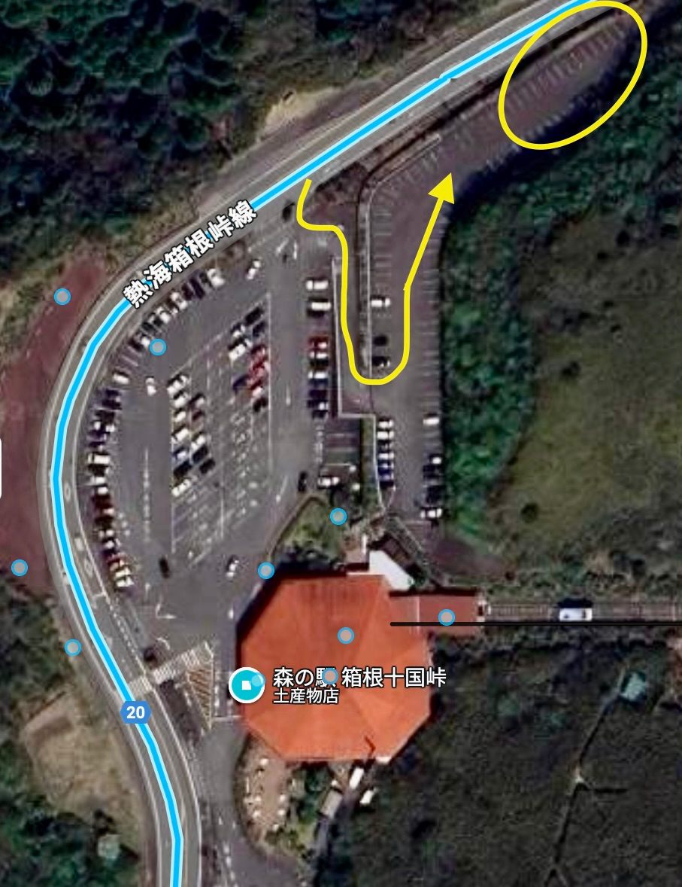
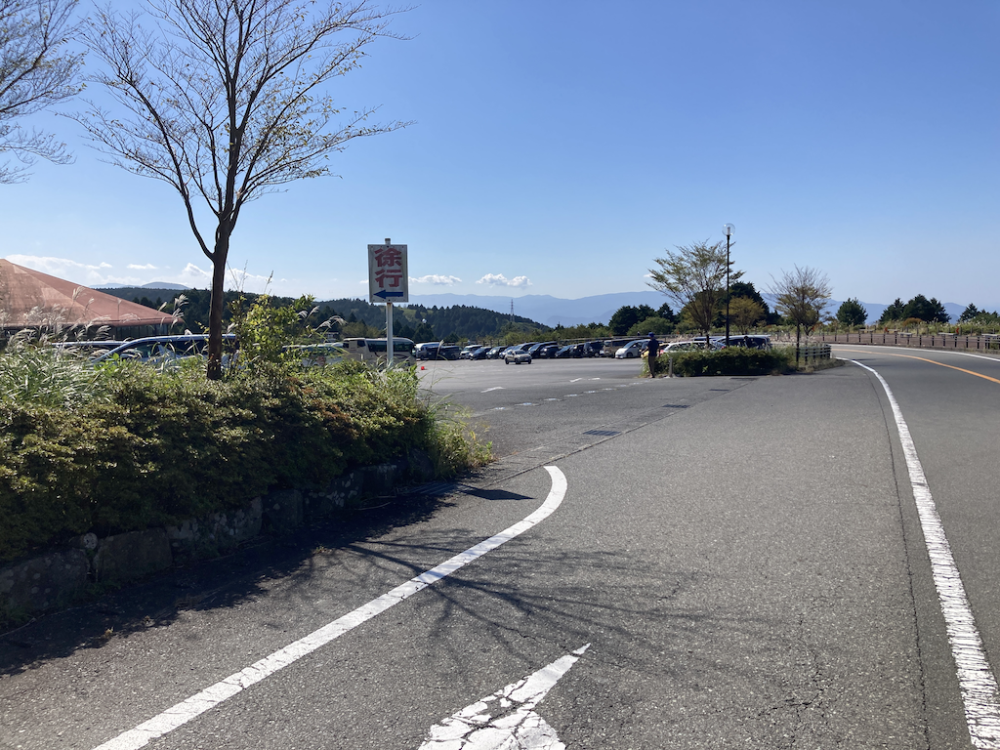
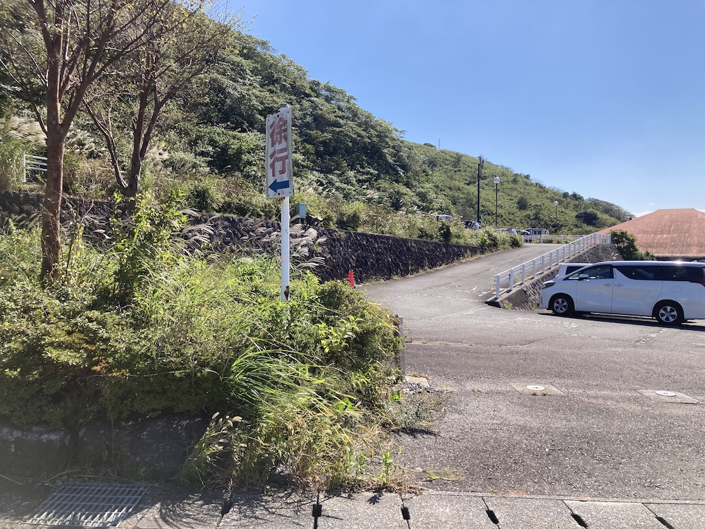
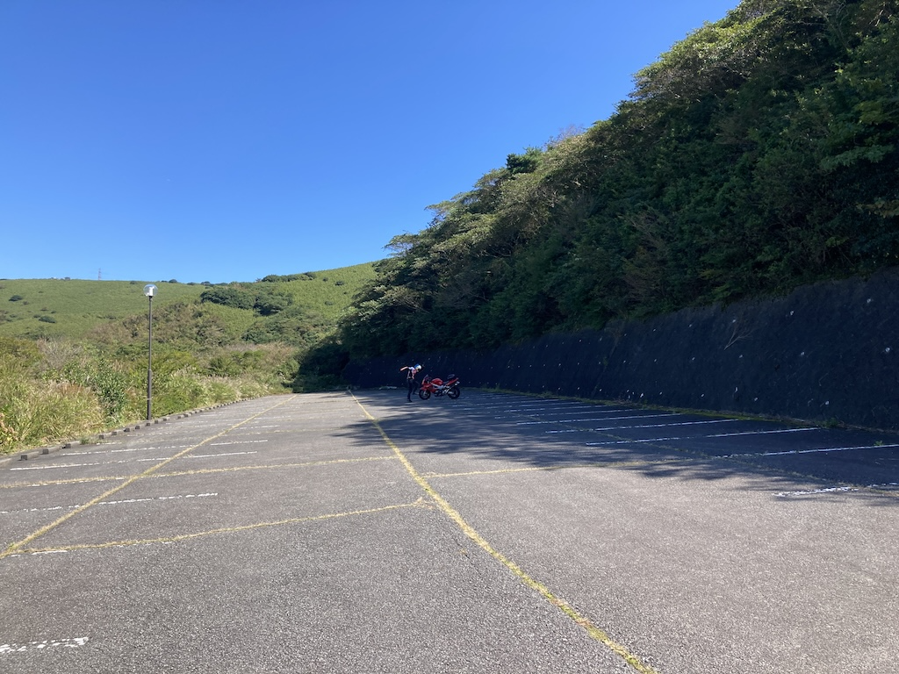
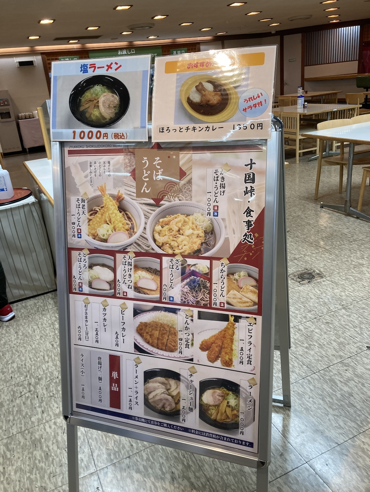
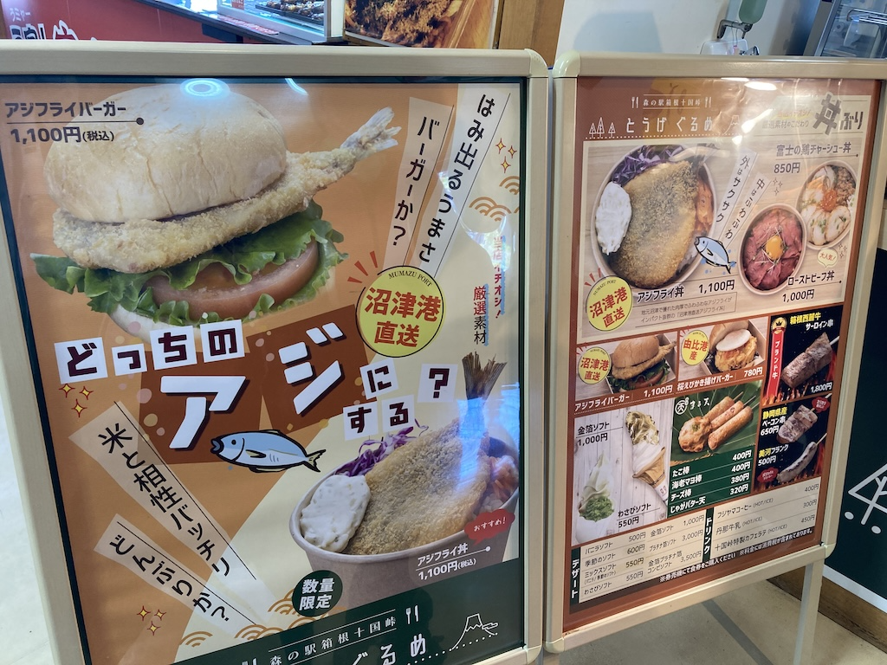
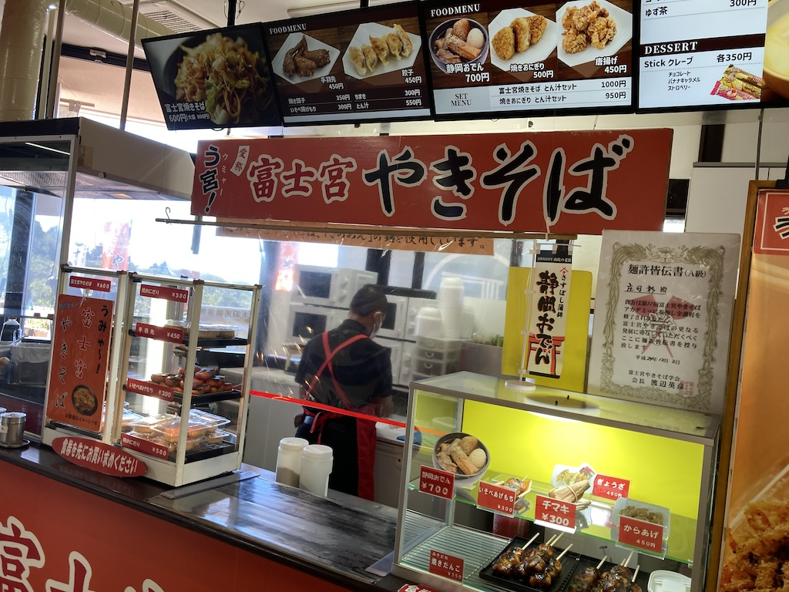

箱根十国峠MTG
ミーティングに関する情報をまとめます。
新たに発信する情報があった場合にはこちらを更新しますので適宜確認お願いします。
集合場所
駐車場内のミーティング場所についてご案内します。
十国峠の駐車場は非常に広いです。
道路から直接入れる(高さの同じ)部分に止めるのが一般的ですが、今回のMTGでは一段上の部分を使わせていただきます。
以下の図参照です。
線で書いたように入り口を入ったらすぐにスロープがあるので登ってください。
登った一番奥(丸囲み部分)がMTG場所です。
続いて入り方もご案内します。

入り方
バイパラ方面(箱根峠方面)から来た写真です。
上空写真の上側からきたときのものです。
ワインディングを抜けると森の駅に入るレーンが現れます。ここを左折です。

左折してすぐスロープがあります。ここを上がってください。
上がりきったら、上空写真のようにくるっと回って一番奥まで進んでください。

登った奥がこんな感じです。
怪しいドラえもんがいる辺りがMTG場所となります。
バイクをどう止めるかは当日案内します。

注意・お願い事項
チェーンが開くのは8:30です。
早く到着してしまった場合はオープンまでお待ちください。
実は駐車場の一番下の出口から逆走すれば時間前に入れます。
これは職員のために開けているものですので絶対に入らないようにお願いします。
チェーンが外されるまで待っていてください。
トイレは中にあります。早く到着してしまいそうな方は箱根峠のパーキングか、道の駅 箱根峠で用を済ませてきてください。
昭和世代の皆さんなので常識あるとは思いますが、一応お伝えしておきます。
空ぶかしなど迷惑になる行為は控えてください。
駐車場利用について
ミーティングで使うことについて許可を得ているわけではありません。
広いので大丈夫だとは思うのですが十国峠の管理者側から何か言われた場合、移動するかもしれません。(距離から箱根峠パーキングかバイパラ)
食事について
十国峠の食事情報です。
正直なところ、高い割に大したものはありません。。
ミーティング時間を10:00-12:00としています。
今回は食事を挟んでミーティング継続ではなく、解散後に食事となります。
お腹が空いて我慢できない方はこちらで召し上がってもよし、おいしいものを目当てに少し走ってもよいでしょう。
Discord内では食事情報を募っています。そちらも参照ください。
お土産はたくさん売っています。
ソフトクリーム、アメリキャンドックはあったっけなぁ・・


